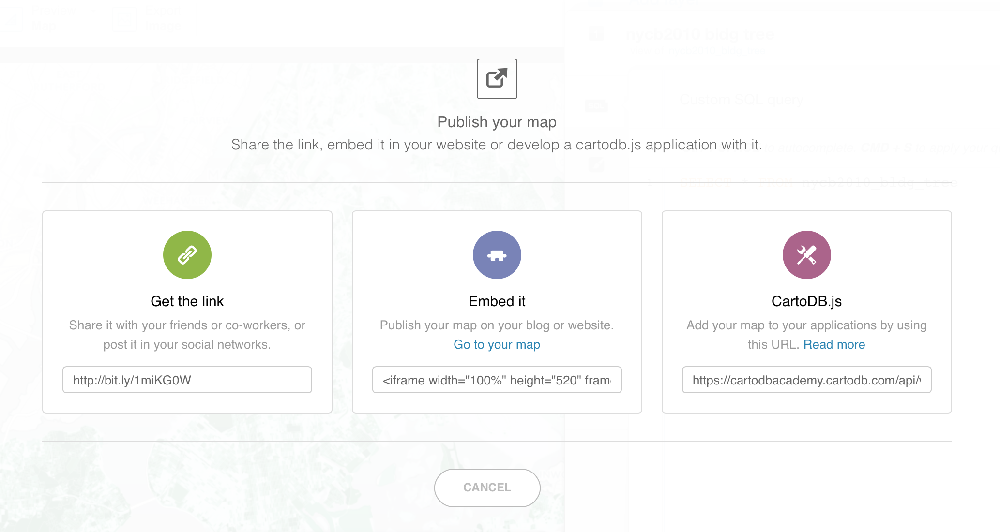
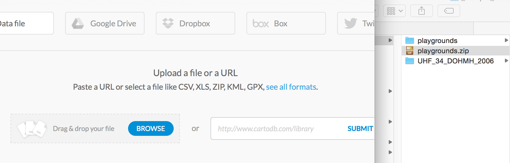

Get onto the Cloud!

(with your maps and GIS data)
Today we'll go over...
CartoDB Platform

comprised of...
JavaScript
 SQL API
SQL API
 Maps API
Maps API
 Import API
Import API
 CartoCSS
CartoCSS

With a PostGIS backend!
And a lot of  for Open Source Software
for Open Source Software
Let's kick off with...
Before we get started...
Let's install a text editor.
 Sublime Text
Sublime Text
And grab code for the exercises...

 cartodb_demo-master.zip, once downloaded, unzip.
cartodb_demo-master.zip, once downloaded, unzip.
Fire up your terminal...
Now let's change directory to our files.
$ cd your/path/to/cartodb_demo-masterThe above code may need to look something like this, if you downloaded the folder to your desktop:
$ cd Desktop/cartodb_demo-master$ in our terminal code, just assume its there
Paste this code...
python -m SimpleHTTPServer 8000...into your terminal. Hit return to fire up this local server.
Quick Summary
Open a Web Browser and paste...
http://localhost:8000
...into your browser
Your are now running a web server and serving up html files.
You're seeing a file named: index.html. Serving up an html file with source code that looks like this:
List of links
Link to Map 1
Now this may seem like a lot of new information and steps, but it will soon be second nature.
index.html file located here:
cartodb_demo/map/tutorial-1/index.htmlOkay, so lets see the first few bits of code
We're calling in some CSS stylesheets and
JavaScript from libs.cartocdn.com.
This next set of code is styling the html page, body and map so it fits in the full screen.
And here we have some JavaScript that is calling createVis from the CartoDB Javascript Library and is referencing a JSON file from my user account at CartoDB.com
We're going to get back to this bit of code very shortly.
Finally, we call up the map in a div
and close out the html file.
Now one thing that is really bugging me about how this map viz is rendering is that it seems off-centered.
We can learn more about the map's settings from the viz.json file we saw in the JavaScript code earlier.
The JSON file for a map vizualization can be found from click the PUBLISH button in the CartoDB web interface.
We can publish the map:
html iframeNow I want to repurpose the map center from this:
"center":"[40.687407052121316, -73.87310028076172]"To these coordinates:
40.7127, -74.0059I'll refer to some code examples from CartoDB Academy: createVis vs. createLayer
It appears that I can edit some options for the createVis.
Save the html file, refresh my page and it appears to work.
Try messing around with the zoom settings:
zoom: 17,Now thinking about what we just did, setting the map frame settings and interacting with the map view is a lot like setting the Data Frame and Layers properties in a conventional desktop GIS environment.
You can actually update a lot of the viz.json, just by using the CartoDB web interface and doing things like panning and zooming and adjusting the settings.
While the idea of coding it all out seems like a step backward in technology, it actually allows the web mapping designer to customize their maps and mapping applications.
The map designer can set many map options. Check out the cartodb.createVis Arguments.
cartodb.createVis('map', 'https://dms8md23.cartodb.com/api/v2/viz/e11893e4-88c8-11e5-8791-0ecfd53eb7d3/viz.json', {
title: false,
description: true,
search: true,
tiles_loader: true,
center_lat: 40.704424,
center_lon: -73.936596,
zoom: 17,
scrollwheel: false,
search: false,
shareable: false,
layer_selector: false,
mobile_layout: true,
})
Quick Summary
Now in this next example we'll explore...
A script to detect User Location (which will be called after the map loads)
var map; // credit: http://html5doctor.com/finding-your-position-with-geolocation/
function detectUserLocation(){
if (navigator.geolocation) {
var timeoutVal = 10 * 1000 * 1000;
navigator.geolocation.watchPosition(
mapToPosition,
alertError,
{ enableHighAccuracy: true, timeout: timeoutVal, maximumAge: 0 }
);
}
else {
alert("Geolocation is not supported by this browser");
}
function alertError(error) {
var errors = {
1: 'Permission denied',
2: 'Position unavailable',
3: 'Request timeout'
};
alert("Error: " + errors[error.code]);
}
}Load up the map, detect User Location...
function main() {
cartodb.createVis('map', 'https://dms8md23.cartodb.com/api/v2/viz/e11893e4-88c8-11e5-8791-0ecfd53eb7d3/viz.json', {
title: false,
description: true,
search: true,
tiles_loader: true,
center_lat: 40.704424,
center_lon: -73.936596,
zoom: 17,
scrollwheel: false,
search: false,
shareable: false,
layer_selector: false,
mobile_layout: true,
})
.done(function(vis, layers) {
// layer 0 is the base layer, layer 1 is cartodb layer
// setInteraction is disabled by default
layers[1].setInteraction(true);
layers[1].on('featureOver', function(e, pos, latlng, data) {
cartodb.log.log(e, pos, latlng, data);
});
// you can get the native map to work with it
map = vis.getNativeMap();
// now, perform any operations you need
// map.setZoom(3);
// map.panTo([50.5, 30.5]);
detectUserLocation();
})
.error(function(err) {
console.log(err);
});
}
window.onload = main;Get the new coords to re-center to User Location;
Then Query (with SQL) the CartoDB common-data account;
function mapToPosition(position) {
lon = position.coords.longitude;
lat = position.coords.latitude;
var jsonURL = "https://common-data.cartodb.com/api/v2/sql?q=select geoid from public.tl_2014_census_tracts where st_intersects(the_geom,st_GeomFromText('POINT("+lon+" "+lat+")', 4326)) & format=geojson";
// var jsonObj = [];
$.getJSON(jsonURL, function(data) {
$.each(data.rows, function(i, f) {
tblRow = f.geoid;
tractID = tblRow.substr(5, 6);
stateID = tblRow.substr(0, 2);
countyID = tblRow.substr(2, 3);
var cenURL = "http://api.census.gov/data/2010/sf1?key=30699f15ab4d04a1e0943715b539d256c9a3ee44&get=P0010001&for=tract:"+tractID+"&in=state:"+stateID+"+county:"+countyID
$.getJSON(cenURL, function(data) {
var cenVar = data;//.split(",",1);//.["P0010001"][0]
//popVar = data.str.split(",",-3);
var varName = cenVar[0][0];
var popVal = cenVar[1][0];
// window.alert(jsonObj);
//updateQuery();
map.setView(new L.LatLng(lat,lon), 18);
new L.CircleMarker([lat,lon],{radius: 30}).addTo(map).bindPopup("You are located (via ISP) at: "+lat+", "+lon+" Census Tract (2010): "+tblRow+" Population (Census 2010) ("+varName+") of "+popVal+" Via CartoDB and Common Data, PostGIS (SQL), and the US Census API").openPopup();
//new CircleMarker;
});
});});
};
mapToPosition();This SQL query asks the CartoDB common-data account, what Census Tract Intersects with our Latitude, Longitude coords from the User Location, and gets it returned as GeoJSON.
var jsonURL = "https://common-data.cartodb.com/api/v2/sql?q=select
geoid from public.tl_2014_census_tracts where
st_intersects(the_geom,st_GeomFromText('POINT("+lon+" "+lat+")', 4326))
& format=geojson";Now we want to grab elements from that JSON file and construct a call to the US Census API for Total Population (for the tract), using the Census Tract ID from the SQL query against common-data;
$.getJSON(jsonURL, function(data) {
$.each(data.rows, function(i, f) {
tblRow = f.geoid;
tractID = tblRow.substr(5, 6);
stateID = tblRow.substr(0, 2);
countyID = tblRow.substr(2, 3);
var cenURL = "http://api.census.gov/data/2010/sf1?key=30699f15ab4d04a1e0943715b539d256c9a3ee44&get=P0010001&for=tract:"+tractID+"&in=state:"+stateID+"+county:"+countyIDAnd with our User Location Latitude, Longitude as the new center and new CircleMarker, we're grabbing the US Census API Data and adding it and other info to a Pop Up window.
$.getJSON(cenURL, function(data) {
var cenVar = data;
var varName = cenVar[0][0];
var popVal = cenVar[1][0];
map.setView(new L.LatLng(lat,lon), 18);
new L.CircleMarker([lat,lon],{radius: 30}).addTo(map).bindPopup("You are located (via ISP)
at: "+lat+", "+lon+" Census Tract (2010): "+tblRow+" Population
(Census 2010) ("+varName+") of "+popVal+" Via
CartoDB and Common Data, PostGIS (SQL), and the US Census
API").openPopup();
//new CircleMarker;
});
});});
};
mapToPosition();So the key SQL function we are using is ST_Intersects (PostGIS documentation) .
And what's cool about that is we're doing it in the URL via CartoDB SQL API. First with the URL,
https://common-data.cartodb.com/api/v2/sql?q=the SQL query,
geoid FROM public.tl_2014_census_tracts
WHERE ST_INTERSECTS(the_geom,st_GeomFromText('POINT("+lon+" "+lat+")'
, 4326)
)and the return as GeoJSON.
& format=geojson";
This is what is so exciting about CartoDB, the user can send SQL tasks up to the PostGIS databases.
And throughout the CartoDB platform, we can access and create map data, display it, and modify and geoprocess with the SQL API.
All without having to manage a server and the PostgreSQL databases.
What does that mean?
Less work for the IT team, less work for web mapping team, less work for the GIS analysts.
Less work for everyone.All while exposing your organization to a super rich Geographic Information System.That leverages the scalability of the Cloud.
Quick Summary
Unless there's any questions, let's move on to...
Importing shapefiles is super easy with the CartoDB web interface.

Now if you don't have a CartoDB account, create one now.
If you do, log in to your account.
Importing ShapeFiles into CartoDB
CartoDB requires that you create a .ZIP file containing the .SHP, .DBF, .SHX and .PRJ files, all prefixed with same name (while not required, this is a suggested best practice).For example, a ne_10m_populated_places.zip zip file contains;
ne_10m_populated_places.shp,
ne_10m_populated_places.dbf,
ne_10m_populated_places.shx,
and ne_10m_populated_places.prjLearn more about Importing Shapefiles from the official CartoDB documentation.
Let's upload the NYC Playgrounds file to your CartoDB account
Once completed,...
...let's leverage some Python code and the Import API to import another peice of data!
On the CartoDB web interface, go to https://YOUR_USERNAME.cartodb.com/your_apps
Copy the API key from the box like the one below
Be careful with this code, don't share it, or put it on your public GitHub account
Import API
 ...using cartodb-utils.py
...using cartodb-utils.py
Drop any single shapefile in the
cartodb_demo-master/data/*your_shapefile*.shpCheck the
cartodb_demo-master/_sample_dataNow we can run the following code...
Which will:
.shp filename.shp and any associated filesWith CartoDB, you can build rich web mapping applications.
With CartoDB, you can build rich web mapping applications.
With CartoDB, you can build rich web mapping applications.
With CartoDB, you can build rich web mapping applications.